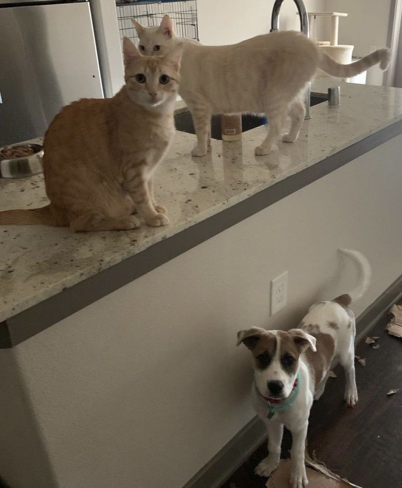

Copyright © 2023 xkuang
Hi, I'm Xiaoting!
Data Scientist Engineer Analyst
Based in Bay Area, California
I'm a California Bay Area based Data Scientist & Data Engineer & Backend developer with 10+ years of research & industry experience. I have two cats and a dog.

- Nice to meet you!
Xiaoting Kuang
Data scientist & engineer analyst researcherHello there! My name is Xiaoting Kuang. A detail-oriented, analytical person with a sincere passion for data science and research analysis. Passionate data engineer with a strong track record in developing and implementing machine learning algorithms at scale. Proven expertise in analyzing data with natural language processing and assisting with the development of research strategies. Language proficiency in English and Chinese.
- Current Work Senior Data Engineer
- Industry AdTech
- Mail xiaotingkuangcu@gmail.com
-
10+
Years of Research & Industry Experience -
20+
Big Data Projects Completed -
5+
Years of NLP Research Experience
- Experience
Everything about me!
-
2022 - Present
Senior Data Engineer
YahooWork on automation of yield reporting system
Analyze yield reports on multiple revenue streams to optimize Ad display
Implement business logic in data pipeline processing with Hive & Presto & SQL
Design internal analytic tools
Monitor metrics implementation
-
2021 - 2022
Data Scientist
MadHiveWorked closely with the customer success team to understand the requests from clients
design and build backend dataset, forecast models, and dashboard for data visualization
Designed and Implemented last-touch, multi-touch (fractional) attribution models, publisher ranker algorithm as data products
Worked fluently in Google Cloud environment, implementing data solutions with Bigquery, Looker and CoLab
-
2018 - 2000
Data Scientist
Xandr at AT&TWorked on big data projects in media and marketing using Python, SQL, PySpark, AWS, Snowflakes, data lake, EMR
Developed metrics lining up with market leaders, to measure and analyze consumer behavior journey in our products
Optimized data structure and size for cost-saving
Lead end to end project from data cleaning, exploration, model building, and evaluation with metrics
Built prediction models with time series forecasting, random forest, decision tree, XGboost, and parameter tuning
-
2012 - 2018
Doctoral Candidate
Teachers College, Columbia UniversityWhy some people don’t take COVID19 Vaccine? cognitive analytics with Twitter data (Doctoral Dissertation)
Social Network Analysis &Topic Model in Blogging System (International Educational Data Mining Conference Paper)
Developed and evaluated course contents and curriculums for the Applied Analytics master program
Help 100+ students develop 20+ data analytics projects.
Tech Blog
刷题碎碎念 & 一些想法
-
 Dec 10, 2023
Given an unsorted integer array
Dec 10, 2023
Given an unsorted integer arraynums, return the smallest missing positive integer.
You must implement an algorithm that runs inO(n)time and usesO(1)auxiliary space.这个任务是在一个未排序的整数数组 nums 中找到最小的缺失的正整数，并且要求算法满足特定的时间复杂度和空间使用限制。1. 时间复杂度 O(n)：这意味着算法完成其任务的时间应该与输入数组的大小成线性关系。也就是说，如果数组有 n 个元素，找到最小缺失正整数的时间应该与 n 成比例。这通常通过一种只遍历数组有限次数（往往只有一次）的算法来实现。2. 辅助空间 O(1)：这个限制是指算法使用的额外空间或内存，除了输入数组之外。O(1) 空间意味着算法应该使用恒定数量的额外空间。不管输入数组的大小如何，使用的内存应该保持不变，不会随着数组大小的增加而增加。这就排除了创建一个与输入数组大小相似的新数组或使用随输入大小增长的数据结构的解决方案。
Example 1:
Input: nums = [1,2,0]
Output: 3
Explanation: The numbers in the range [1,2] are all in the array.当输入的数组是 nums = [1, 2, 0] 时，任务是在这个数组中找出最小的缺失的正整数。我们来逐步分析这个数组：1. 首先，我们只关注正整数，因为负数或零不符合我们要找的“最小缺失正整数”的条件。所以在这个例子中，我们关注的数字是 1 和 2。2. 我们检查从 1 开始的连续正整数序列。在这个数组中，1 和 2 都存在，所以这两个数字不是我们要找的答案。3. 接下来，我们检查数字 3。因为 3 不在数组中，它就成了数组中“缺失”的最小正整数。因此，对于输入 nums = [1, 2, 0]，输出是 3。这是因为 3 是在数组中没有出现过的最小的正整数。这种问题的解决方案通常涉及检查正整数序列，找出第一个在数组中没有出现的正整数。在这个例子中，尽管 0 出现在数组中，它不被考虑，因为我们只关心正整数。Example 2:
Input: nums = [3,4,-1,1]
Output: 2
Explanation: 1 is in the array but 2 is missing.nums = [3, 4, -1, 1]在这个数组中，我们首先忽略所有非正整数（即所有小于或等于0的数）。剩下的正整数是 3, 4, 和 1。在这个范围内，数字 2 没有出现在数组中，它是缺失的最小的正整数。因此，对于这个数组，答案是 2。为什么要找“缺失的最小正整数”呢？在很多实际应用中，这个问题是用来检测序列中的间断或确定最小的未使用的标识符。例如，在分配用户ID或数据库索引时，你可能想要找到最小的还未被使用的数。Example 3:
Input: nums = [7,8,9,11,12]
Output: 1
Explanation: The smallest positive integer 1 is missing.
Constraints:1 <= nums.length <= 105
-231 <= nums[i] <= 231 - 1
这个函数的工作原理如下：1. 首先检查 1 是否在数组中，因为 1 是可能的最小缺失正整数。如果 1 不在数组中，函数立即返回 1。2. 接着，如果数组只包含一个元素且这个元素是 1，那么下一个缺失的最小正整数显然是 2。3. 然后，函数将所有的负数、零以及大于数组长度 n 的数替换为 1。这是因为这些数不可能是缺失的最小正整数。4. 接下来，使用数组索引作为哈希键，通过改变对应元素的符号来标记该索引对应的正整数已存在于数组中。5. 最后，遍历数组，查找第一个正数的索引，这个索引即是缺失的最小正整数。如果数组中所有的数都已被标记（即没有正数），则返回 n + 1（这是因为数组中已包含从 1 到 n 的所有正整数）。这种方法符合题目要求的 O(n) 时间复杂度和 O(1) 空间复杂度。class Solution(object):def firstMissingPositive(self, nums):""":type nums: List[int]:rtype: int"""n = len(nums)# Check if 1 is not in nums, return 1 as it's the smallest missing positive integerif 1 not in nums:return 1# If the array contains only one number and it's 1, then the answer is 2if n == 1:return 2# Replace negative numbers, zeros, and numbers larger than n with 1sfor i in range(n):if nums[i] <= 0 or nums[i] > n:nums[i] = 1# Use the index as a hash key and the sign of the number to indicate presencefor i in range(n):a = abs(nums[i])if a == n:nums[0] = -abs(nums[0])else:nums[a] = -abs(nums[a])# Find the first missing positive integerfor i in range(1, n):if nums[i] > 0:return i# If all numbers from 1 to n-1 are present, then answer is n or n+1if nums[0] > 0:return nreturn n + 1# Use the index as a hash key and the sign of the number to indicate presencefor i in range(n):a = abs(nums[i])if a == n:nums[0] = -abs(nums[0])else:nums[a] = -abs(nums[a])这部分代码是算法的核心，它使用数组自身来跟踪哪些正整数存在于数组中。让我们逐步解析这个代码段的作用：1. 循环遍历数组：for i in range(n) 遍历数组中的每个元素。2. 获取绝对值：a = abs(nums[i])。由于数组元素的符号可能在之前的步骤中被更改（用来标记数字的存在），因此需要取其绝对值来获取原始数字。3. 检查数字是否等于数组长度 n：if a == n。这里，如果数字等于数组的长度，我们需要对数组的第一个元素 nums[0] 进行特殊处理，因为我们不能使用索引 n（数组的索引是从 0 到 n-1）。如果 a == n，则将 nums[0] 设置为其自身的负值 nums[0] = -abs(nums[0])。这是因为我们不能标记数字 n 的存在于索引 n（超出数组范围），所以我们选择标记在 nums[0]。4. 标记其他数字的存在：else: nums[a] = -abs(nums[a])。对于数组中的其他数字（不等于 n 的数字），我们将其对应索引处的元素设置为负值，来标记这个数字的存在。例如，如果 3 出现在数组中，我们将 nums[3] 设置为负数。5. 使用符号作为存在标记：通过将索引处的数字设置为负数，我们有效地标记了该索引对应的正整数存在于数组中。这样，数组的符号变成了一个“标志位”，告诉我们哪些数字已经出现。这种方法不需要额外的存储空间，因为它直接在原数组上操作，并且仅通过改变数字的符号来记录信息，从而满足 O(1) 空间复杂度的要求。在这之后，算法将通过检查第一个保持正数的索引来找到最小的缺失正整数。 Dec 10, 2023
Given an array of integers nums and an integer target, return indices of the two numbers such that they add up to target.You may assume that each input would have exactly one solution, and you may not use the sameelement twice.You can return the answer in any order.Example 1:Input: nums = [2,7,11,15], target = 9 Output: [0,1] Explanation: Because nums[0] + nums[1] == 9, we return [0, 1].Example 2:Input: nums = [3,2,4], target = 6 Output: [1,2] Example 3:Input: nums = [3,3], target = 6 Output: [0,1]Only one valid answer exists.Follow-up: Can you come up with an algorithm that is less than O(n2) time complexity?Solution:class Solution(object):def twoSum(self, nums, target):for i in range(0, len(nums)-1):for j in range(i+1, len(nums)):if nums[i]+nums[j]==target:return [i,j]提供的“两数之和”问题的解决方案是一种暴力方法，使用两个嵌套循环来检查数组中的每一对数字，看它们是否加起来等于目标值。这种解决方案的时间复杂度为 O(n²)，其中 n 是数组中的元素数量。对于每个元素 nums[i]，它都会检查数组中的每个其他元素 nums[j]，看它们是否加起来等于目标值。然而，follow up提到了一个后续问题，关于找到一个时间复杂度小于 O(n²) 的算法。一个更高效的方法，时间复杂度为 O(n)，可以通过使用哈希表（在 Python 中是字典）。这个方法的思想是遍历数组一次，对于每个元素，检查其补数（目标值减去当前元素）是否已经出现并存储在哈希表中。如果出现了，我们就找到了解决方案。如果没有，我们将当前元素添加到哈希表中。下面是如何实现这个更高效解决方案的代码：class Solution(object):def twoSum(self, nums, target):d = {}for i, num in enumerate(nums):remain = target - numif remain in d:return [d[remain],i]d[num]=i在这个解决方案中：d 是一个字典，它存储数组中的数字作为键，以及它们的索引作为值。我们使用 enumerate 遍历数组，这样可以同时得到索引 (i) 和值 (num)。对于每个 num，我们计算它的补数 (target - num) 并检查它是否已经在 d 中。如果找到补数，意味着我们找到了两个加起来等于目标值的数字，所以我们返回它们的索引。如果没有找到，我们将 num 和它的索引 i 添加到 d 字典中。这种方法将时间复杂度从 O(n²) 显著降低到 O(n)，使其对于大型数组来说更加高效。 Dec 10, 2023
Given a 1-indexed array of integers numbers that is already sorted in non-decreasing order, find two numbers such that they add up to a specific target number. Let these two numbers be numbers[index1] and numbers[index2] where 1 <= index1 < index2 < numbers.length.Return the indices of the two numbers, index1 and index2, added by one as an integer array [index1, index2] of length 2.The tests are generated such that there is exactly one solution. You may not use the same element twice.Your solution must use only constant extra space.Example 1:Input: numbers = [2,7,11,15], target = 9 Output: [1,2]Explanation: The sum of 2 and 7 is 9. Therefore, index1 = 1, index2 = 2. We return [1, 2].Example 2:Input: numbers = [2,3,4], target = 6 Output: [1,3]Explanation: The sum of 2 and 4 is 6. Therefore index1 = 1, index2 = 3. We return [1, 3].Example 3:Input: numbers = [-1,0], target = -1 Output: [1,2]Explanation: The sum of -1 and 0 is -1. Therefore index1 = 1, index2 = 2. We return [1, 2].The tests are generated such that there is exactly one solution.pointers move toward center- class Solution:def twoSum(self, numbers, target):i, j = 0, len(numbers) - 1 #头末两个数开始while i < j:current_sum = numbers[i] + numbers[j]if current_sum == target:return [i+1, j+1]elif current_sum > target:j -= 1else:i += 1return []
这个问题是在一个已经按非递减顺序排列的整数数组中，找出两个数使它们的和等于一个特定的目标数。这两个数被标记为 numbers[index1] 和 numbers[index2]，其中 1 <= index1 < index2 < numbers.length。需要返回这两个数的索引 index1 和 index2，索引是基于 1 的（即数组的第一个元素索引为 1 而不是 0），并且作为一个长度为 2 的整数数组 [index1, index2] 返回。这个问题有一个确切的解决方案，并且不允许使用同一个元素两次。解决方案必须仅使用恒定的额外空间。解决方法如下：使用两个指针：一个指针 i 放在数组的开始位置（索引 0），另一个指针 j 放在数组的结束位置（索引 len(numbers) - 1）。指针向中心移动：在循环中，计算指针 i 和 j 处的元素之和。然后根据这个和与目标值的比较，移动指针：如果当前和等于目标值 target，则找到了正确的一对数字。由于题目中的数组是基于 1 的索引，因此返回 [i+1, j+1]。如果当前和大于目标值，需要减小和，因此将指针 j 向左移动（即 j -= 1）。如果当前和小于目标值，需要增加和，因此将指针 i 向右移动（即 i += 1）。循环直到找到解决方案：由于题目保证有一个确切的解决方案，所以这个循环总会找到并返回正确的索引对。这种方法的时间复杂度为 O(n)，因为它最多遍历数组一次，并且空间复杂度为 O(1)，只使用了两个额外的变量（指针 i 和 j）。这使得它非常适合处理大型数组，同时也满足题目对于空间效率的要求。
Dec 11, 2023
Given an integer array nums, return all the triplets [nums[i], nums[j], nums[k]] such that i != j, i != k, and j != k, and nums[i] + nums[j] + nums[k] == 0.Notice that the solution set must not contain duplicate triplets.Example 1:Input: nums = [-1,0,1,2,-1,-4] Output: [[-1,-1,2],[-1,0,1]]Explanation: nums[0] + nums[1] + nums[2] = (-1) + 0 + 1 = 0.nums[1] + nums[2] + nums[4] = 0 + 1 + (-1) = 0.nums[0] + nums[3] + nums[4] = (-1) + 2 + (-1) = 0.The distinct triplets are [-1,0,1] and [-1,-1,2].Notice that the order of the output and the order of the triplets does not matter.Example 2:Input: nums = [0,1,1]Output: [] Explanation:The only possible triplet does not sum up to 0.Example 3:Input: nums = [0,0,0] Output: [[0,0,0]]Explanation: The only possible triplet sums up to 0.这个解决方案有效地找到了所有唯一的和为零的三元组，考虑到了跳过重复元素以避免重复三元组的需要。开始时的排序步骤确保我们可以轻松地通过数组移动和比较元素。 Dec 11, 2023
Given an array nums of n integers, return an array of all the unique quadruplets [nums[a], nums[b], nums[c], nums[d]] such that:0 <= a, b, c, d < na, b, c, and d are distinct.nums[a] + nums[b] + nums[c] + nums[d] == targetYou may return the answer in any order.Example 1:Input: nums = [1,0,-1,0,-2,2], target = 0Output: [[-2,-1,1,2],[-2,0,0,2],[-1,0,0,1]]Example 2:Input: nums = [2,2,2,2,2], target = 8 Output: [[2,2,2,2]]class Solution(object):def fourSum(self, nums, target):n = len(nums)nums.sort()result = []for i in range(0,n):if i > 0 and nums[i] == nums[i - 1]:continue # 跳过重复元素for j in range(i+1,n): #第二个基点要在第一个基点后面if j > i+1 and nums[j] == nums[j - 1]:continue # 跳过重复元素l, m = j + 1, n - 1while l < m:sum = nums[i] + nums[j] + nums[l] + nums[m]if sum < target:l += 1elif sum > target:m -= 1else:result.append([nums[i], nums[j], nums[l],nums[m]])while l < m and nums[l] == nums[l + 1]:l += 1 # 跳过重复元素while l < m and nums[m] == nums[m - 1]:m -= 1 # 跳过重复元素l += 1m -= 1return resultset two static pointers and two dynamic pointers work towards target这个问题要求在一个整数数组 nums 中找到所有唯一的四元组 [nums[a], nums[b], nums[c], nums[d]]，这些四元组的元素和等于给定的目标数 target。解决这个问题的方法与解决“三数之和”问题类似，但需要增加一个维度来处理第四个数。可以通过首先排序数组，然后使用迭代和双指针的组合来解决。以下是这种方法的步骤说明：排序数组：对数组进行排序，这样就更容易跳过重复的元素，并且更容易在数组中进行导航。带有额外层次的迭代：使用嵌套循环遍历数组来选取四元组的前两个数字。对于每一对这样的数字，使用两个指针来找到另一对数字，使得这四个数字加起来等于目标值。对于索引 i 和 j（j > i）处的元素，设置两个指针：一个在 l = j + 1，另一个在 m = n - 1。当 l < m 时，计算 nums[i]、nums[j]、nums[l] 和 nums[m] 的总和。如果总和等于目标值，将四元组添加到结果集中，并将 l 和 m 指针向内移动。如果总和小于目标值，将 l 指针向右移动以增加总和。如果总和大于目标值，将 m 指针向左移动以减少总和。跳过重复元素：在迭代过程中，跳过重复的元素以确保四元组的唯一性。返回结果：在遍历数组之后，返回四元组列表。这个解决方案确保找到了所有和为目标值的唯一四元组，同时通过在迭代过程中跳过重复元素来避免重复的四元组。Leetcode 实质是一个套娃平台，给我们洗脑程序间的人传人现象。干完2sum，套3sum，同一个套路还能搞一次4sum，干到n sum， 全靠n-2个for loop。 Dec 11, 2023
Leetcode 509: Fibonacci NumberThe Fibonacci numbers, commonly denoted F(n) form a sequence, called the Fibonacci sequence, such that each number is the sum of the two preceding ones, starting from 0 and 1.That is,F(0) = 0, F(1) = 1 F(n) = F(n - 1) + F(n - 2), for n > 1.Given n, calculate F(n). Example 1:Input: n = 2Output: 1Explanation: F(2) = F(1) + F(0) = 1 + 0 = 1.Example 2:Input: n = 3Output: 2Explanation: F(3) = F(2) + F(1) = 1 + 1 = 2.Example 3:Input: n = 4Output: 3Explanation: F(4) = F(3) + F(2) = 2 + 1 = 3.Constraints:0 <= n <= 30class Solution(object):def fib(self, n):""":type n: int:rtype: int"""if n == 0:return 0if n == 1:return 1a, b = 0, 1 #设定基点for i in range(2, n+1):a, b = b, a+breturn bfor loop is your friends要计算第n个斐波那契数，我们可以使用多种方法。斐波那契序列的定义是，序列中每个数是前两个数的和，从 0 和 1 开始。最直接的实现方法是使用递归，但这对于大的n值来说可能效率不高，因为会有重复的计算。一个更高效的方法是使用动态规划或简单的迭代。- 我们分别处理
n = 0和n = 1的基础情况。 - 然后我们使用循环来迭代计算斐波那契数。
- 我们从
a = 0和b = 1开始（斐波那契数列的前两个数）。 - 对于每次迭代，我们更新
a和b，使得a成为前一个b，而b成为前一个a和b的和。 - 循环结束后，
b包含了第n个斐波那契数。
You are climbing a staircase. It takes
nsteps to reach the top.Each time you can either climb
1or2steps. In how many distinct ways can you climb to the top?Example 1:
Input: n = 2 Output: 2 Explanation: There are two ways to climb to the top. 1. 1 step + 1 step 2. 2 steps
Example 2:
Input: n = 3 Output: 3 Explanation: There are three ways to climb to the top. 1. 1 step + 1 step + 1 step 2. 1 step + 2 steps 3. 2 steps + 1 step
class Solution(object):def climbStairs(self, n):""":type n: int:rtype: int"""if n ==1:b = 1elif n ==2:b = 2else:a, b = 1, 2for i in range(3, n+1):a, b = b, a+breturn b斐波那契数同款套路题目要求计算爬到楼梯顶部的不同方法数量，可以通过将问题分解为较小的子问题来解决。
关键观察点是，到达第 n 阶楼梯的方法数量是到达第 n-1 阶和第 n-2 阶的方法数量之和。这是因为要到达第 n 阶，你可以从第 n-1 阶向上爬一阶，或者从第 n-2 阶向上爬两阶。我们用 ways[i] 来表示到达第 i 阶的方法数量。那么，ways[i] = ways[i-1] + ways[i-2]。我们分别处理 n = 1 和 n = 2 的基本情况。我们创建一个数组 ways 来存储到达每一阶的方法数量。我们将 ways[1] 和 ways[2] 分别初始化为 1 和 2，因为爬一阶楼梯只有一种方法，爬两阶楼梯有两种方法（要么两次各爬一阶，要么一次爬两阶）。然后我们从第 3 阶开始迭代，直到第 n 阶，根据到达前两阶的方法数量之和来计算到达每一阶的方法数量。最后，ways[n] 给出了到达第 n 阶的方法数量。我的解法里 a = ways[i-1], b = ways[i] Jan 31, 2023
Jan 31, 2023
Elisc is a leading web design agency with an award-winning design team that creates innovative, effective websites that capture your brand, improve your conversion rates, and maximize your revenue to help grow your business and achieve your goals.
In today’s digital world, your website is the first interaction consumers have with your business. That's why almost 95 percent of a user’s first impression relates to web design. It’s also why web design services can have an immense impact on your company’s bottom line.
That’s why more companies are not only reevaluating their website’s design but also partnering with Kura, the web design agency that’s driven more than $2.4 billion in revenue for its clients. With over 50 web design awards under our belt, we're confident we can design a custom website that drives sales for your unique business.

- Let's Connect
Get in touch
I'm currently avaliable to take on new projects, please feel free to send me a message about anything that you want to build together. Let's create something wonderful!